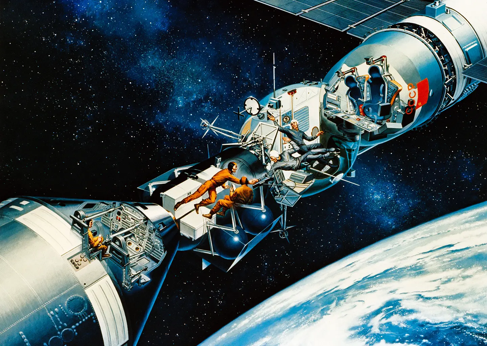

Media
Le immagini partecipano alla ricerca. Il loro valore nasce anche dal contesto in cui vengono prodotte, selezionate e mostrate.

Le immagini partecipano alla ricerca. Il loro valore nasce anche dal contesto in cui vengono prodotte, selezionate e mostrate.
